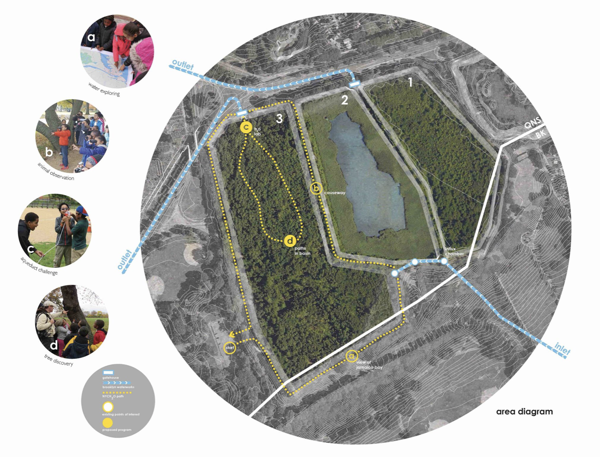
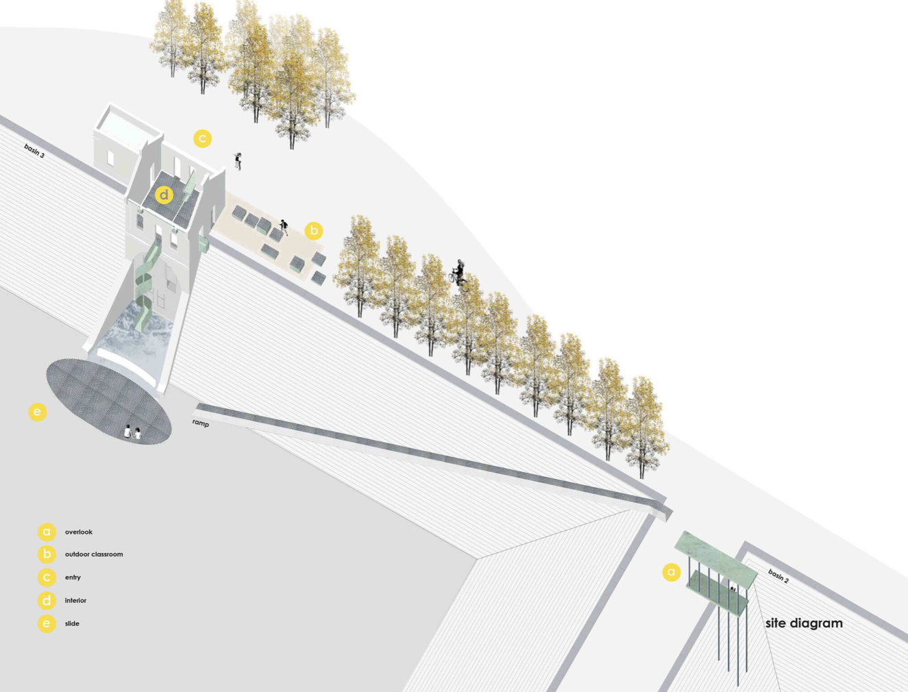
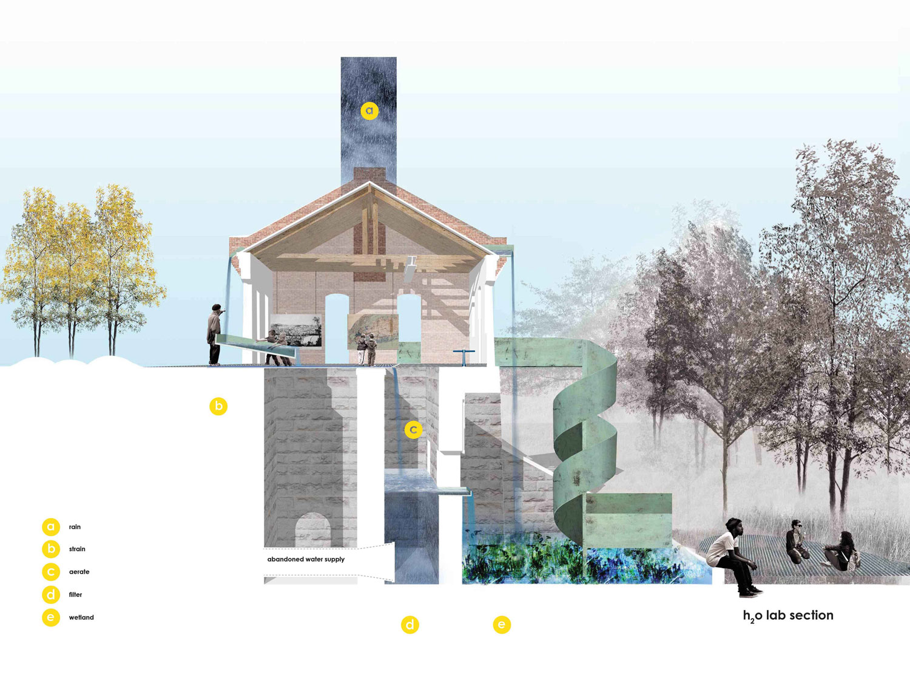
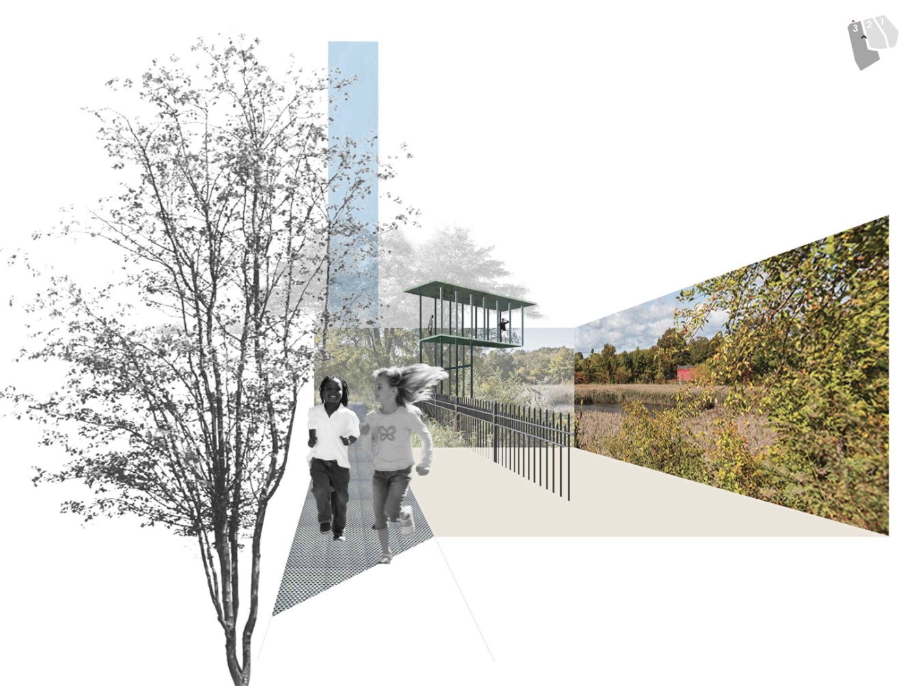
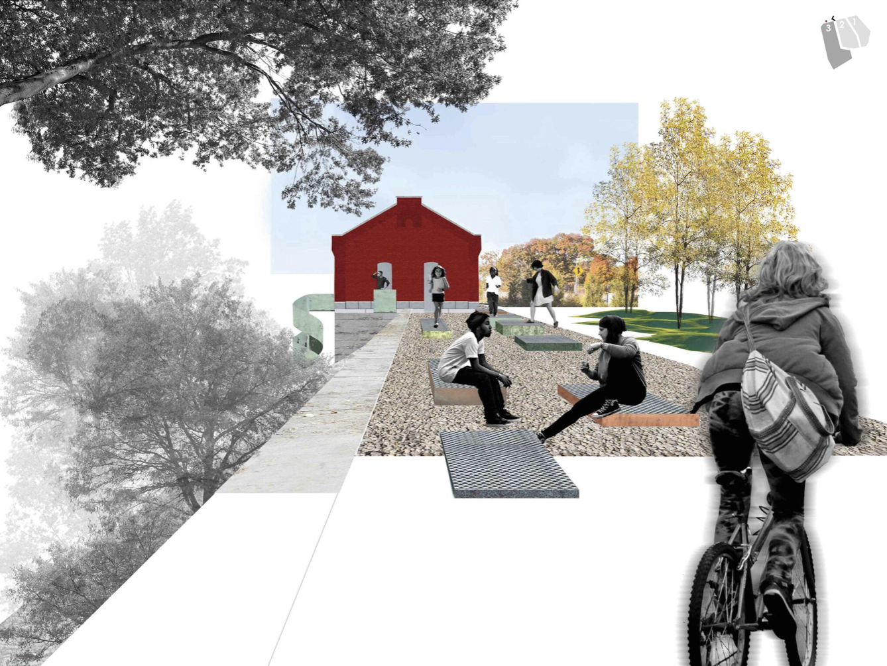
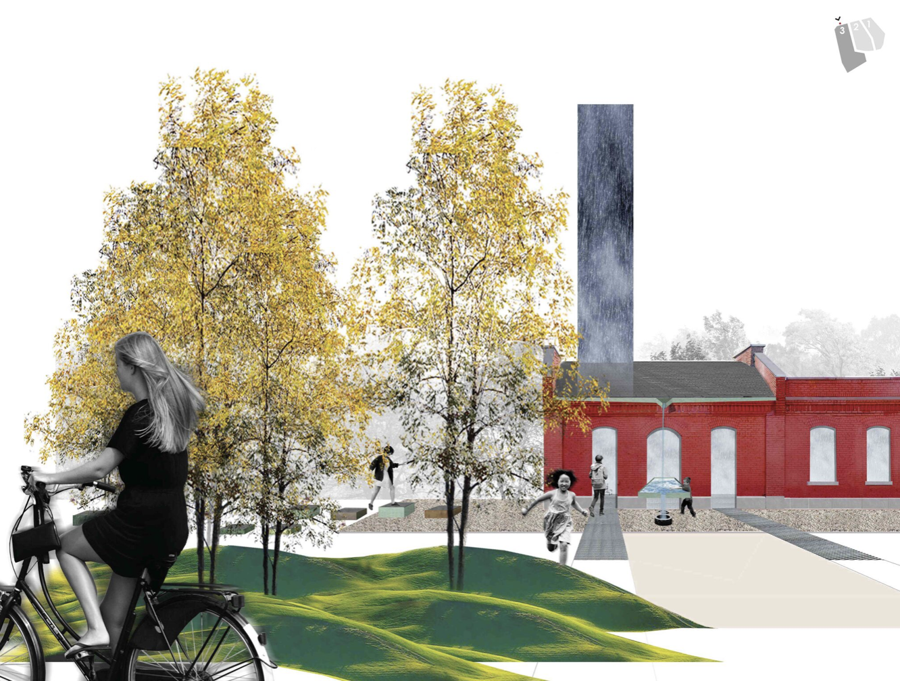
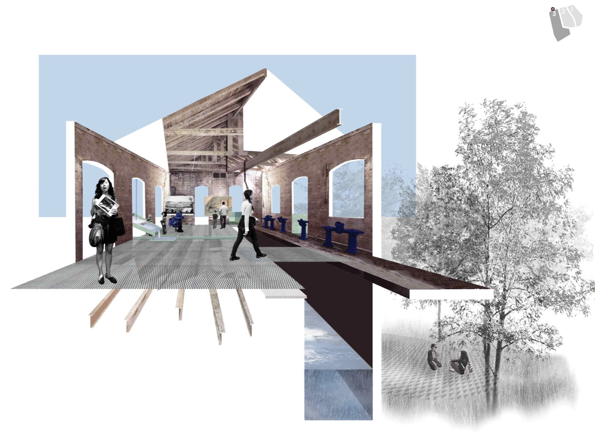
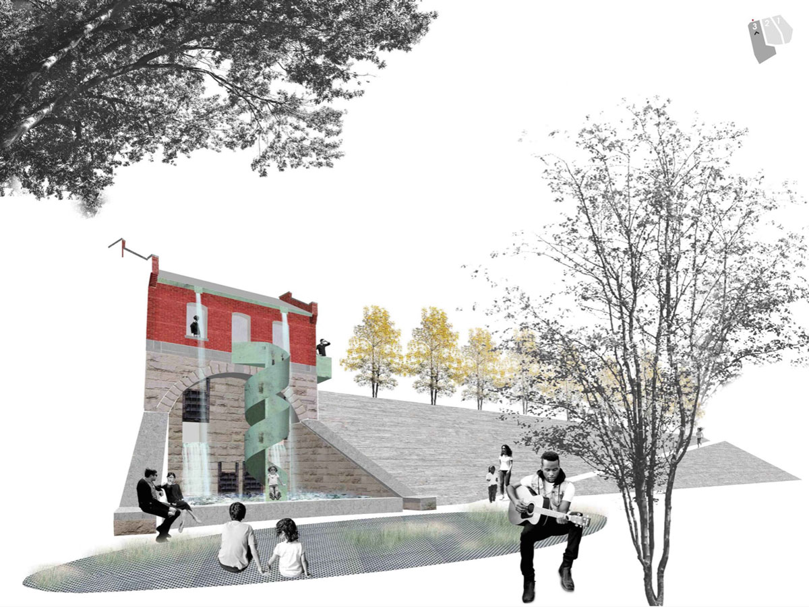

Ridgewood Reservoir: an Urban Regeneration
Without the Ridgewood reservoir, there wouldn’t be Brooklyn. NYC H2O is a non profit organization that teaches the importance of water. Their vision is to restore the abandoned gate houses into a water educational center which would enable the public to access the basins. Through numerous public and Parks and Recreation community meetings, we helped NYC H2O envision a better future for this unique park.
Project credits of David Cunningham Architecture Planning PLLC

The site sits on top of the Harbor Hill Moraine, formed by the Wisconsin glacier in 16 000 BCE. Built in 1858, Ridgewood reservoir was the crown jewel of Brooklyn's original municipal water system; nevertheless, following the consolidation of 1898, NYC started relying more to the Catskill water network, making the Ridgewood reservoir redundant and eventually decommissioning it in 1989. Two of its three basins were drained and its infrastructures abandoned until in 2011, when NYC Parks installed new lighting, fences and walking paths.
As part of their mission, NYC H2O has sheperded hundreds of teachers and thousands of school children on a series of reservoir adventures. While conducting field trips at the Ridgewood Reservoir, NYC H2O encountered an abandoned building which they realised was not an eyesore but an opportunity. The vision is to transform the gatehouse, which once controlled the flow of water to 19th century Brooklynites, into a source of knowledge and a gateway to new discoveries for their 21st century descendants.
 
The H2O lab: inside the abandoned gatehouse
Collection of rain water through the roof and a water table. The water gets filter and realised outside to create a wetland. The kids will have a full interaction with the filtration process, getting inside the basins though a copper slide!

The overlook

The outdoor classroom

The entry

Water center

Slide!